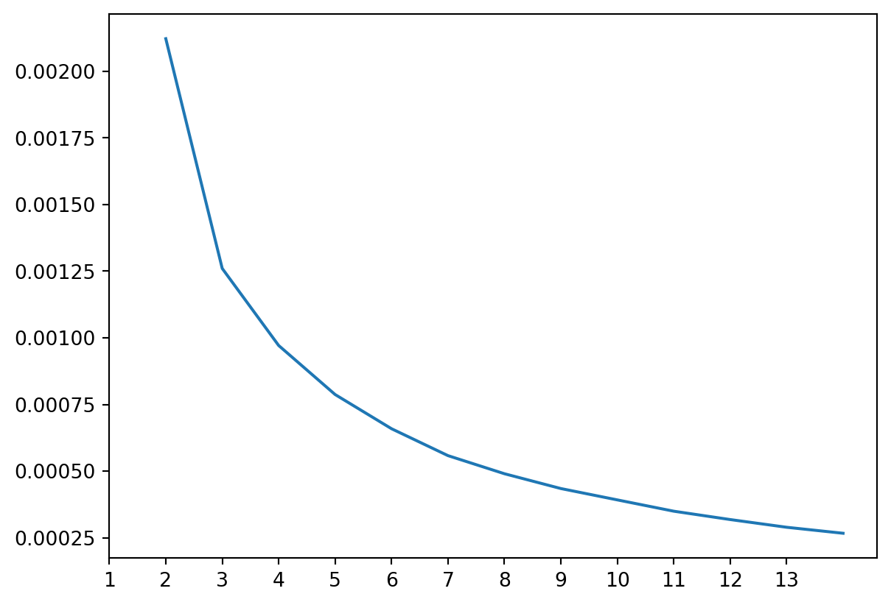
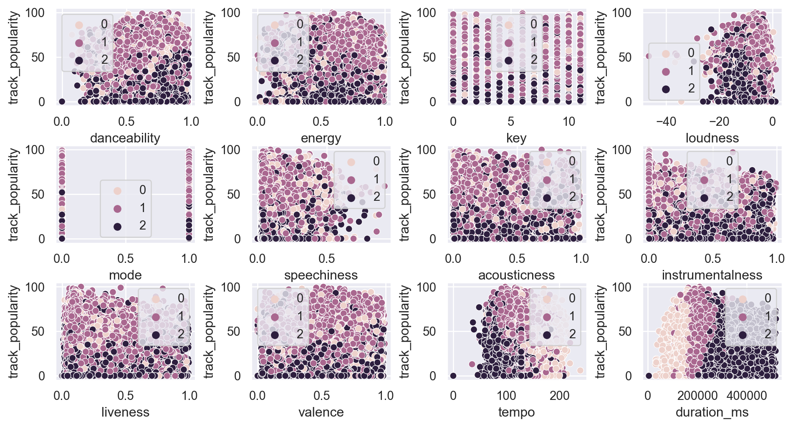

import numpy as np
import pandas as pd
from sklearn import preprocessing
import matplotlib.pyplot as plt
import seaborn as sns
from sklearn.cluster import KMeansMusic Data Clustering
KMeans
Clustering
K-Means Clustering
Banner Image Credit: University of Rochester
In this post I’ll explore the K Means algorithm to cluster data fetched from spotify API. This data containes the following attributes
- Track_id: Unique identifier for a song
- Track_name: Name of the song
- Track_artist: Artist of the song
- Track_popularity: Song popularity rating (0-100)
- Track_album_id: Unique identifier for the album
- Track_album_name: Name of the album
- Track_album_release_date: Release date of the album
- Playlist_name: Name of the playlist
- Playlist_id: Identifier of the playlist
- Playlist_genre: Genre of the playlist
- Playlist_subgenre: Subgenre of the playlist
- Danceability: Indicates how suitable a track is for dancing (ranging from 0.0 to 1.0)
- Energy: Represents the intensity and activity level of the track (ranging from 0.0 to 1.0)
- Key: Estimated overall key of the track
- Loudness: Overall loudness of a track in decibels (dB)
- Mode: Indicates the modality of a track (0 for minor, 1 for major)
- Speechiness: Detects the presence of spoken words in a track (ranging from 0.0 to 1.0)
- Acousticness: Indicates the likelihood of a track being acoustic (ranging from 0.0 to 1.0)
- Instrumentalness: Predicts whether a track contains no vocals (ranging from 0.0 to 1.0)
- Liveness: Detects the presence of a live audience in the recording
- Valence: Describes the musical positiveness conveyed by a track (ranging from 0.0 to 1.0)
- Tempo: Estimated tempo of a track in beats per minute (BPM)
- Duration_ms: Duration of the song in milliseconds
Task
The task for this blog post is to train a couple of regression models and predict how pouplar a song is given the other features about the song.
# Preprocessing ## Imports
Load the data
songs = pd.read_csv("../data/spotify_songs.csv")
songs.head()| track_id | track_name | track_artist | track_popularity | track_album_id | track_album_name | track_album_release_date | playlist_name | playlist_id | playlist_genre | ... | key | loudness | mode | speechiness | acousticness | instrumentalness | liveness | valence | tempo | duration_ms | |
|---|---|---|---|---|---|---|---|---|---|---|---|---|---|---|---|---|---|---|---|---|---|
| 0 | 6f807x0ima9a1j3VPbc7VN | I Don't Care (with Justin Bieber) - Loud Luxur... | Ed Sheeran | 66 | 2oCs0DGTsRO98Gh5ZSl2Cx | I Don't Care (with Justin Bieber) [Loud Luxury... | 2019-06-14 | Pop Remix | 37i9dQZF1DXcZDD7cfEKhW | pop | ... | 6 | -2.634 | 1 | 0.0583 | 0.1020 | 0.000000 | 0.0653 | 0.518 | 122.036 | 194754 |
| 1 | 0r7CVbZTWZgbTCYdfa2P31 | Memories - Dillon Francis Remix | Maroon 5 | 67 | 63rPSO264uRjW1X5E6cWv6 | Memories (Dillon Francis Remix) | 2019-12-13 | Pop Remix | 37i9dQZF1DXcZDD7cfEKhW | pop | ... | 11 | -4.969 | 1 | 0.0373 | 0.0724 | 0.004210 | 0.3570 | 0.693 | 99.972 | 162600 |
| 2 | 1z1Hg7Vb0AhHDiEmnDE79l | All the Time - Don Diablo Remix | Zara Larsson | 70 | 1HoSmj2eLcsrR0vE9gThr4 | All the Time (Don Diablo Remix) | 2019-07-05 | Pop Remix | 37i9dQZF1DXcZDD7cfEKhW | pop | ... | 1 | -3.432 | 0 | 0.0742 | 0.0794 | 0.000023 | 0.1100 | 0.613 | 124.008 | 176616 |
| 3 | 75FpbthrwQmzHlBJLuGdC7 | Call You Mine - Keanu Silva Remix | The Chainsmokers | 60 | 1nqYsOef1yKKuGOVchbsk6 | Call You Mine - The Remixes | 2019-07-19 | Pop Remix | 37i9dQZF1DXcZDD7cfEKhW | pop | ... | 7 | -3.778 | 1 | 0.1020 | 0.0287 | 0.000009 | 0.2040 | 0.277 | 121.956 | 169093 |
| 4 | 1e8PAfcKUYoKkxPhrHqw4x | Someone You Loved - Future Humans Remix | Lewis Capaldi | 69 | 7m7vv9wlQ4i0LFuJiE2zsQ | Someone You Loved (Future Humans Remix) | 2019-03-05 | Pop Remix | 37i9dQZF1DXcZDD7cfEKhW | pop | ... | 1 | -4.672 | 1 | 0.0359 | 0.0803 | 0.000000 | 0.0833 | 0.725 | 123.976 | 189052 |
5 rows × 23 columns
Remove Features
identifiers
Features like track_id, track_name, track_artist, track_album_id, track_album_name, playlist_id,playlist_name will have little contribution to our model as they are unique identifiers. Hence we’ll remove them from the data.
songs = songs.drop(
[
"track_id",
"track_name",
"track_artist",
"track_album_id",
"track_album_name",
"playlist_id",
"playlist_name",
],
axis="columns",
)
songs.head()| track_popularity | track_album_release_date | playlist_genre | playlist_subgenre | danceability | energy | key | loudness | mode | speechiness | acousticness | instrumentalness | liveness | valence | tempo | duration_ms | |
|---|---|---|---|---|---|---|---|---|---|---|---|---|---|---|---|---|
| 0 | 66 | 2019-06-14 | pop | dance pop | 0.748 | 0.916 | 6 | -2.634 | 1 | 0.0583 | 0.1020 | 0.000000 | 0.0653 | 0.518 | 122.036 | 194754 |
| 1 | 67 | 2019-12-13 | pop | dance pop | 0.726 | 0.815 | 11 | -4.969 | 1 | 0.0373 | 0.0724 | 0.004210 | 0.3570 | 0.693 | 99.972 | 162600 |
| 2 | 70 | 2019-07-05 | pop | dance pop | 0.675 | 0.931 | 1 | -3.432 | 0 | 0.0742 | 0.0794 | 0.000023 | 0.1100 | 0.613 | 124.008 | 176616 |
| 3 | 60 | 2019-07-19 | pop | dance pop | 0.718 | 0.930 | 7 | -3.778 | 1 | 0.1020 | 0.0287 | 0.000009 | 0.2040 | 0.277 | 121.956 | 169093 |
| 4 | 69 | 2019-03-05 | pop | dance pop | 0.650 | 0.833 | 1 | -4.672 | 1 | 0.0359 | 0.0803 | 0.000000 | 0.0833 | 0.725 | 123.976 | 189052 |
Date Data
In this post we’ll also drop date data we’d like to focus on music features itself
songs = songs.drop(["track_album_release_date"], axis="columns")Gener
We’ll also drop the genre info to ensure that we have a clustoring based off undeclared labels to make it truely unsupervised learning
genres = songs[["playlist_genre", "playlist_subgenre"]]
songs = songs.drop(["playlist_genre", "playlist_subgenre"], axis="columns")Missing values
Let’s check if there are any missing values in our dataset
songs.isnull().values.any()FalseWe don’t have any missing values, which is good. Let’s revisit what’s remaining
songs.head()| track_popularity | danceability | energy | key | loudness | mode | speechiness | acousticness | instrumentalness | liveness | valence | tempo | duration_ms | |
|---|---|---|---|---|---|---|---|---|---|---|---|---|---|
| 0 | 66 | 0.748 | 0.916 | 6 | -2.634 | 1 | 0.0583 | 0.1020 | 0.000000 | 0.0653 | 0.518 | 122.036 | 194754 |
| 1 | 67 | 0.726 | 0.815 | 11 | -4.969 | 1 | 0.0373 | 0.0724 | 0.004210 | 0.3570 | 0.693 | 99.972 | 162600 |
| 2 | 70 | 0.675 | 0.931 | 1 | -3.432 | 0 | 0.0742 | 0.0794 | 0.000023 | 0.1100 | 0.613 | 124.008 | 176616 |
| 3 | 60 | 0.718 | 0.930 | 7 | -3.778 | 1 | 0.1020 | 0.0287 | 0.000009 | 0.2040 | 0.277 | 121.956 | 169093 |
| 4 | 69 | 0.650 | 0.833 | 1 | -4.672 | 1 | 0.0359 | 0.0803 | 0.000000 | 0.0833 | 0.725 | 123.976 | 189052 |
Visualization
Let’s visualize the data and get a better understanding of the values
sns.pairplot(songs)
This plots can say a lot about the data, e.g., songs in the lower end of danceability spectrum are less likely to be popular. Aside from that, most of the features seem to have a fairly normal distrubtion on the data. ## Normalization Let’s scales data to a similar range to esnure consistancey in impact of the features.
songs_normalized = preprocessing.normalize(songs)Clusturing
Let us now start clustering the data using KMeans. K-means clustering is an unsupervised machine learning algorithm used for partitioning a dataset into K distinct, non-overlapping clusters. The primary objective of K-means is to group data points based on similarities in their features, where each cluster is represented by its centroid, a point at the center of the cluster.
Here’s how the K-means algorithm typically works:
- Initialization: Start by randomly selecting K data points from the dataset as initial cluster centroids.
- Assignment: Assign each data point to the nearest centroid, forming K clusters based on proximity or similarity to centroids. This is often done using a distance metric, such as Euclidean distance.
- Update Centroids: Recalculate the centroids of the K clusters by taking the mean of all data points assigned to each centroid.
- Reassignment: Reassign data points to the nearest centroid based on the updated centroids.
- Repeat: Iteratively update centroids and reassign data points until convergence criteria are met. Convergence occurs when centroids no longer change significantly or after a specified number of iterations.
The algorithm aims to minimize the within-cluster sum of squares (WCSS) or inertia, which represents the total squared distance of each point within its respective cluster to its centroid. K-means aims to optimize this objective function to create compact, well-separated clusters.
Key points about K-means clustering:
- K-means is sensitive to the initial placement of centroids, which can lead to different outcomes.
- It works well when clusters are well-separated and have a roughly spherical shape.
- The algorithm may struggle with non-linear clusters, varying cluster sizes, or clusters with irregular shapes.
- Determining the optimal number of clusters (K) is crucial but not always straightforward. Techniques like the elbow method or silhouette score can help in selecting an appropriate K value. K-means clustering finds applications in various fields, including customer segmentation, image segmentation, anomaly detection, and recommendation systems, among others, where identifying natural groupings or patterns within data is essential.
We can use the Elbow method to have an indication of clusters for our data. It consists in the interpretation of a line plot with an elbow shape. The number of clusters is where the elbow bends. The x axis of the plot is the number of clusters and the y axis is the Within Clusters Sum of Squares (WCSS) for each number of clusters:
from sklearn.cluster import KMeans
ks = list(range(1, 14))
wcss = []
for i in ks:
kmeans = KMeans(n_clusters=i, init="k-means++", random_state=42)
kmeans.fit(songs_normalized)
wcss.append(kmeans.inertia_)
lp = sns.lineplot(x=ks, y=wcss)
lp.set_xticks(range(len(wcss)), labels=ks)
It seems we’ve three clustors
sns.set(rc={"figure.figsize": (11.7, 8.27)})
kmeans = KMeans(n_clusters=3, init="k-means++", random_state=42)
kmeans.fit(songs_normalized)
fig = plt.figure()
fig.subplots_adjust(hspace=0.4, wspace=0.4)
cols = len(songs.columns)
fig_count = 1
for j in range(cols - 1):
# if i == j:
# break
ax = fig.add_subplot(4, 4, fig_count)
fig_count = fig_count + 1
sns.scatterplot(
data=songs,
x=songs.columns[j + 1],
y="track_popularity",
hue=kmeans.labels_,
ax=ax,
)
plt.show()
From this figure we see song duration of the song in milliseconds has a clear impact on the clustring categories.